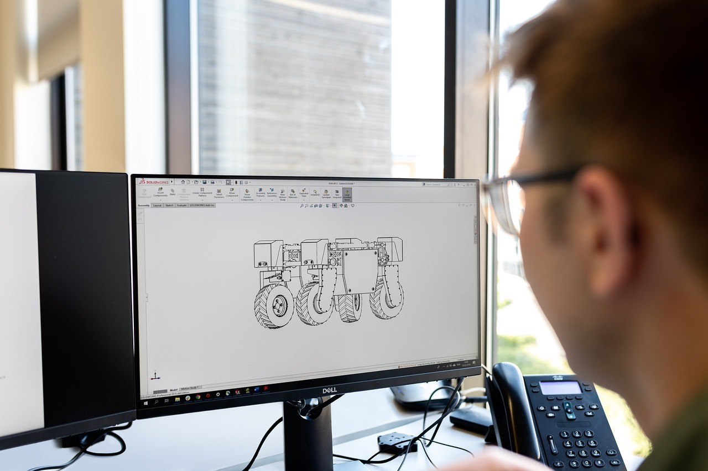

TL;DR
Identity switching harms productivity and relationships. Establish a unified persona by identifying core values, reflecting weekly, and practicing consistency. Tools like journaling apps can reinforce this process.
Why Young Professionals Struggle with Identity Switching
Young professionals often find themselves adopting different personas in workplace situations, which can disrupt their workflow. This identity switching stems from adapting to various social dynamics such as collaborating with colleagues, presenting to clients, or networking at events...
Why Common Advice Misses the Mark

Many professionals are advised to "just be yourself" or "fake it till you make it," but these phrases often overlook the complexity behind identity switching.
The underlying issue is psychological, tied to triggers like stress, expectations, and social pressure...
Creating a Unified Work Persona: Your Core Workflow
To streamline your work persona, develop a core workflow that encourages consistency. Here’s a step-by-step guide to creating a unified work persona: 1. Identify Your Core Values: Reflect on what values define your professional self. This includes traits like honesty, creativity, and teamwork.
2...
Scenario: Navigating a Week in a Hybrid Workplace
Imagine a week where you consciously practice your unified persona in a hybrid workplace. On Monday, you start with a virtual team meeting, and instead of shifting to a more formal persona, you actively engage by sharing ideas that reflect your core values...
Common Pitfalls and Tradeoffs Young Professionals Face

Failing to manage your work identity often leads to significant pitfalls. A common mistake is overcompensating by adopting extreme versions of a persona, which can result in burnout or social isolation...
Next Steps: Tools and Practices to Consolidate Your Identity
To further streamline your identity management, consider employing specific tools and techniques. Start with a journaling app like Journey to document your week’s events and reflect on how well you maintained your core values.
Utilize task managers like Todoist to set up reminders for reflection sessions...
FAQ
How can I identify when I'm switching identities at work?
Reflect on your feelings and behaviors in different situations, and keep a journal of when you feel your personality changing.
What practices can help maintain focus on my core professional persona?
Use a combination of regular reflection, engaging affirmations, and practical tools for productivity to reinforce your core values.
Are there specific tools that can help with identity management?
Apps like Journey for journaling and Todoist for task management can assist in keeping your identity consistent.
This article is continually reviewed for practical usefulness and updated with the latest methods and tools in identity management.
Turn this into a workflow
Do not stop at ideas. Pick one workflow, test it for 14 days, then keep only what reduces friction.
Search more articles
Find related tools, workflows, and guides.
Photo credits
- Photo 1: ileukers via Pixabay
- Photo 2: This_is_Engineering via Pixabay
- Photo 3: This_is_Engineering via Pixabay
- Photo 4: StartupStockPhotos via Pixabay
- Photo 5: This_is_Engineering via Pixabay